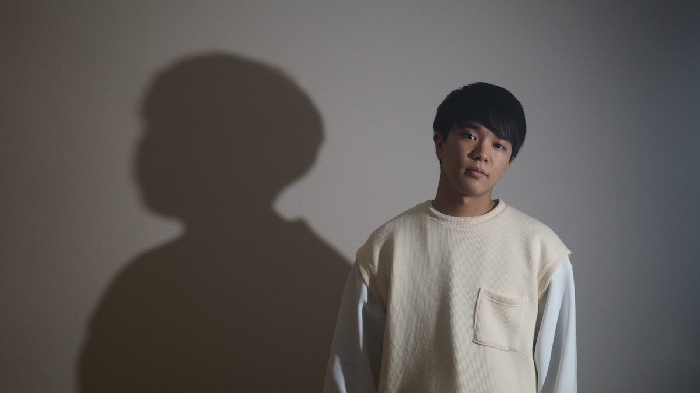

小貫智弥 / Tomoya Onuki
Videographer / MediaArtist / Engineer
1999年 東京都生まれ。筑波大学 情報メディア創成学類 在学中。大学でコンピュータサイエンスを学ぶかたわら、フリーのビデオクリエイターとして活動している。情報科学や映像にまつわる技術を活かしながら、主に映像表現・メディアアート・情報可視化・HCIといった分野を中心に制作を行う。
Contact / 連絡先
Work / 職歴
2018 - 現在
株式会社ビデオソニック
ビデオカメラマン
Exhibitions / 展示
-
暗転と永遠の中で。1/100展, 筑波大学春日エリア7A202・7B206, 2019.12.12 - 12.14
-
アニマの消失平砂アートムーブメント2019「ここにおいて みせる/みる」, 筑波大学平砂学生宿舎9号棟, 2019.5.20 - 6.2
-
CUBEMAD 創成x芸術合同展覧宴 , Cafe4(茨城県 つくば市), 2019.4.13
-
ひとりごとのかたち/集合体についてmAstival 筑波大学 情報メディア創成学類 学生作品展示会, 筑波大学大学会館総合交流会館, 2019.2.14 - 2.15
-
Kalfos Boxどこか遠くの場所で, 筑波大学アートギャラリーT+, 2018.10.1 - 10.5